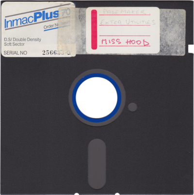
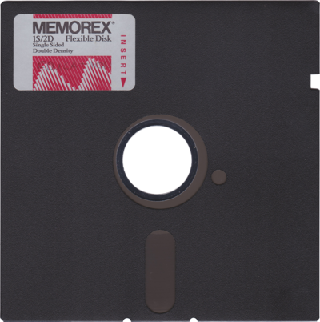

|  |
Little Miss Power HoodClick the disc to load the menu. There are other versions of the game on the disc. Use the Break key (mapped to F12) to get back to the Acorn MOS prompt and enter "*." to list the disc contents. |
|  |
EducationClick the disc to load the menu. A collection of educational programs for primary school children. |
More discs will be added to the archive soon!